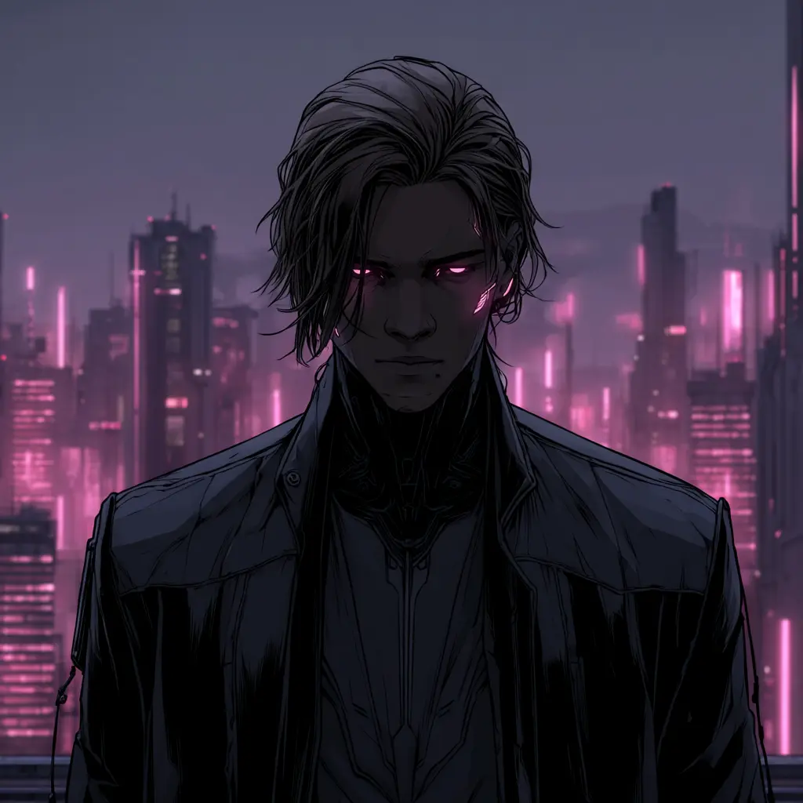

unlog!c
"Музыка — это когда ты превращаешь всё то, что тебя ранит, в красоту"

unlog!c
звуковой архитекторХолодные технологичные решения сплавляются с горячей эстетикой аналоговых инструментов. Все доступное многообразие аудио-компонентов, инструментов и личные переживания — материал, из которого строится мир unlog!c
новый релиз
op. i — 11.06.2026

Dark Ages
Погружение в глубокую тьму на грани темного фентези и города неоновых вывесок
работы
Дискография
1 / 13
Dark Ages
Dark Ages — unlog!c
0:00
0:00
суперпозиция волн
Три компонентные волны, накладываясь друг на друга, формируют итоговую звуковую волну — так же, как слои инструментов в аранжировке создают финальное звучание.
низкая частота (бас)
средняя частота (основной тон)
высокая частота (обертоны)
результирующая волна
инвентарь
DAW
Ableton Live
Интерфейс
M-Audio AIR 192 14
Гитары
Fender Squier Affinity 2021 Stratocaster
Epiphone Les Paul Standard 60s Blueberry Burst
Бас
Ibanez GIO GSR200B
Фортепиано
Casio Privia PX-S1100
Синтезатор
KORG MINILOGUE-XD
Процессор
HOTONE Ampero Mini
Мониторы
JBL 305P MKII
Наушники
Beyerdynamic DT 880 (250 Ом)
Рабочая станция
Intel Core i5-14600kf · 32 GB RAM
связь
тема